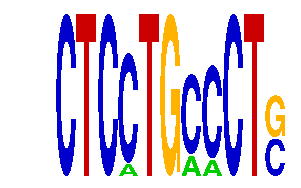

family_1 |
|---|
|  |
| Download PWM |
| Download instances (motifs) |
| Show motif distribution |
Query_ID | Query_Consensus | Subject_Name | Source_DB | Subject_ID | Length | Orientation | Offset | Divergence | Overlap | Subject_Consensus |
|---|
Sequence | Start_position (from start) | Start_position (from end) | Average conservation | Best conservation score | Instance_with_best_CS | Best_Z-score | Instance_with_best_ZS | Strand |
|---|---|---|---|---|---|---|---|---|
| chr8:13249200-13250600 | 724 | 735 | 0.0228182 | 0.045 | CTCMTGCCCTS | 14.438022 | CTCCTGMCCTS | 1 |
| chr13:12220700-12221858 | 292 | 303 | 0.004 | 0.01 | CTCCTGMCCTS | 12.722097 | CTCCTGCMCTS | 1 |
| chr11:54790500-54793000 | 2391 | 2402 | 0.0342727 | 0.059 | CTCCTGMCCTS | 14.438022 | CTCCTGMCCTS | -1 |
| chr2:90963200-90967100 | 1652 | 1663 | 0.213545 | 0.999 | CTCCTGMCCTS | 12.722097 | CTCCTGCMCTS | -1 |
| chr14:55583700-55589300 | 2946 | 2957 | 0.058 | 0.251 | CTCMTGCCCTS | 14.438022 | CTCMTGCCCTS | 1 |
| chr18:4654112-4655700 | 1434 | 1445 | 0.000727273 | 0.002 | CTCCTGCMCTS | 14.438022 | CTCCTGMCCTS | 1 |
| chr8:34902160-34904200 | 1711 | 1722 | 0.005 | 0.009 | CTCCTGMCCTS | 14.438022 | CTCCTGMCCTS | -1 |
| chr8:35030809-35033700 | 219 | 230 | 0.00981818 | 0.023 | CTCMTGCCCTS | 14.438022 | CTCCTGMCCTS | 1 |
| chr2:148452400-148453693 | 325 | 336 | 0.00345455 | 0.007 | CTCCTGCMCTS | 14.438022 | CTCCTGMCCTS | -1 |
| chr2:165953900-165955900 | 1822 | 1833 | 0.000545455 | 0.002 | CTCCTGMCCTS | 14.438022 | CTCCTGMCCTS | 1 |
| chr4:147335900-147338900 | 212 | 223 | 0.0165455 | 0.061 | CTCMTGCCCTS | 14.438022 | CTCCTGMCCTS | 1 |
| chr2:90969400-90973057 | 2179 | 2190 | 0.717909 | 0.985 | CTCCTGCMCTS | 12.722097 | CTCCTGCMCTS | 1 |
| chr13:9481653-9483300 | 910 | 921 | 0.0035 | 0.004 | CTCCTGCMCTS | 12.722097 | CTCCTGCMCTS | 1 |
| chr9:25012100-25013422 | 388 | 399 | 0.00154545 | 0.005 | CTCCTGMCCTS | 14.438022 | CTCCTGMCCTS | 1 |
| chr2:77019700-77021600 | 1437 | 1448 | 0.000727273 | 0.002 | CTCMTGCCCTS | 14.438022 | CTCMTGCCCTS | 1 |
| chr12:104600200-104602100 | 308 | 319 | 0.000545455 | 0.003 | CTCCTGMCCTS | 12.722097 | CTCCTGCMCTS | 1 |
| chr8:71572600-71574000 | 1019 | 1030 | 0.00127273 | 0.003 | CTCCTGCMCTS | 14.438022 | CTCCTGMCCTS | 1 |
| chr9:67010611-67012451 | 36 | 47 | 0.0138182 | 0.035 | CTCCTGCMCTS | 12.722097 | CTCCTGCMCTS | 1 |